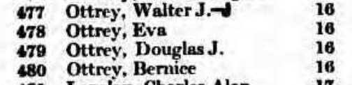
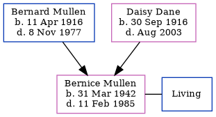

Bernice Ottrey (née Mullen) 1942 - 1985
[ Home ] | [ Calendar ] | [ Surnames Index ] | [ Family History ]The older of 2 children of Bernard Mullen and Daisy Dane, Bernice Mullen, the third cousin once-removed on the mother's side of Nigel Horne, was born in Trowbridge, Wiltshire, England on Mar 31, 19421,2. She married Douglas T J Ottrey in Maidenhead, Berkshire, England around May 19643. In 1965, she lived at 16 High Street, Wallingford, Oxfordshire, England4.
She died on Feb 11, 1985 in Oxford, Oxfordshire2.
Parents
- Bernard William was born on Apr 11, 1916
- Daisy Lillian was born on Sep 30, 1916
Citations
- England & Wales births 1837-2006 - Findmypast
- England & Wales deaths 1837-2007 - Findmypast
- England & Wales Marriages 1837-2005 - Findmypast
- Berkshire, England, Electoral Registers, 1840-1965
Media
Berkshire, England, Electoral Registers, 1840-1965

England & Wales births 1837-2006 - BMD/B/1942/2/AZ/000872/015
England & Wales marriages 1837-2005 - BMD/M/1964/2/AZ/000640/055
England & Wales deaths 1837-2007 - BMD/D/1985/2/75121695
Family Tree
Generated by Ged2Site. Last updated on Jul 20, 2025